Un ambiente di pentesting completo su Android, senza root. Decine di strumenti di sicurezza guidati da una interfaccia web elegante: profili pronti, catalogo installabile, Wizard automatici, Tor e multilingua. A full pentesting environment on Android, no root. Dozens of security tools driven by a sleek web interface: ready profiles, an installable catalog, automated Wizards, Tor and multilingual.
Non riscriviamo Android: mettiamo insieme strumenti che già funzionano bene su telefono, e li rendiamo semplici da usare.
We don't rewrite Android: we combine tools that already run well on a phone and make them simple to use.
La maggior parte sono pacchetti nativi di Termux (nmap, tor, sqlmap…). Il resto vive in un Debian/Kali minimale in proot, senza root.
Most are native Termux packages (nmap, tor, sqlmap…). The rest live in a minimal Debian/Kali under proot, no root.
Un piccolo server locale (server.py, FastAPI su 127.0.0.1:8000) esegue i comandi e trasmette l'output in diretta.
A tiny local server (server.py, FastAPI on 127.0.0.1:8000) runs commands and streams output live.
Una PWA (installabile sulla Home) con schede, profili, temi e Wizard: usi tutto toccando, senza ricordare i flag.
A PWA (installable to Home) with cards, profiles, themes and Wizards: everything by tapping, no flags to remember.
Questa app è l'estensione su Android della distro Linux NexusSEC OS: la stessa filosofia — profili dinamici e strumenti di sicurezza pronti all'uso — portata sul telefono, senza root. Hai un PC o vuoi una postazione completa? Prova la distro live (ISO x86_64/aarch64), con desktop, pannello e profili. This app is the Android extension of the NexusSEC OS Linux distro: the same philosophy — dynamic profiles and ready-to-use security tools — brought to your phone, no root. Got a PC or want a full workstation? Try the live distro (x86_64/aarch64 ISO), with desktop, panel and profiles.
Pen Testing, Web, OSINT, Forensics, Reverse… installi un intero set con un tocco.
Pen Testing, Web, OSINT, Forensics, Reverse… install a whole set with one tap.
Decine di strumenti installabili singolarmente, con parametri grafici e anteprima del comando.
Dozens of tools installable one by one, with graphical parameters and command preview.
Catene di comandi per profilo: l'output di un passo alimenta il successivo. Creabili e condivisibili.
Per-profile command chains: one step's output feeds the next. Create and share your own.
Output in diretta in un pannello nativo; alcuni tool ti fanno anche rispondere alle domande.
Live output in a native panel; some tools even let you answer prompts.
Instrada il traffico dei tool compatibili via Tor con un interruttore.
Route compatible tools' traffic through Tor with a switch.
Terminale, Glass, Neon, Minimal chiaro/scuro. Persino il prompt della shell segue il tema.
Terminal, Glass, Neon, Minimal light/dark. Even the shell prompt follows the theme.
Interamente in Italiano o English: interfaccia, tool, messaggi e output delle procedure.
Fully in Italian or English: interface, tools, messages and procedure output.
Aggiornamenti, installazioni, repo Kali, autostart e riavvio: tutto dai pulsanti dell'app.
Updates, installs, Kali repo, autostart and restart: all from the app's buttons.
Gira su un telefono stock. I tool che richiedono root sono segnalati e disattivati.
Runs on a stock phone. Tools that need root are flagged and disabled.
Apri il pannello dal riquadro >_, scegli un wizard, inserisci un IP/host (o un file) e parte la catena: l'output di un passo diventa l'input del successivo (le porte trovate da nmap finiscono in Nikto, e così via). Sei tu il regista: puoi crearne di tuoi, modificarli, eliminarli e condividerli.
Open the panel from the >_ box, pick a wizard, enter an IP/host (or a file) and the chain runs: one step's output becomes the next step's input (nmap's open ports flow into Nikto, and so on). You're in control: build your own, edit, delete and share them.
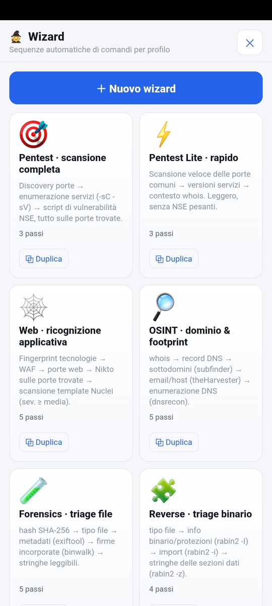
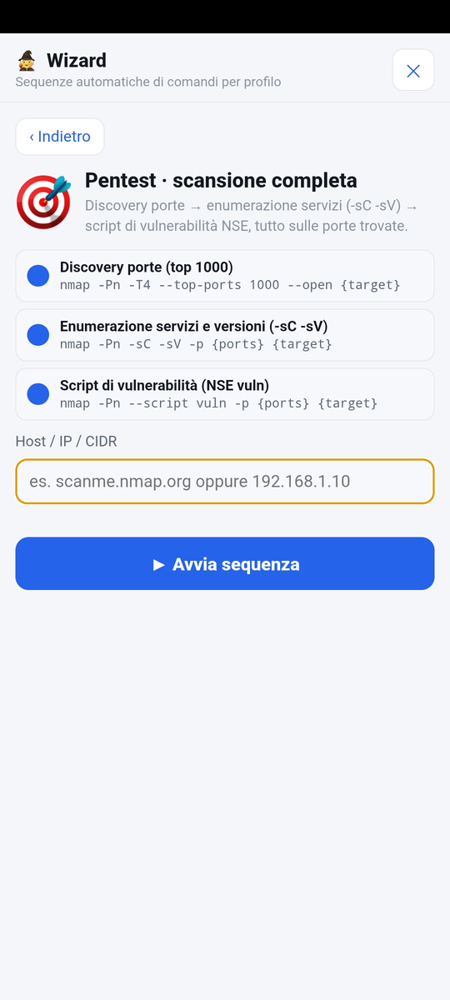
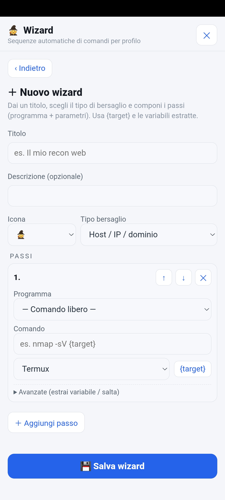
| 🎯 Pentest | discovery porte → enumerazione servizi -sC -sV → script di vulnerabilità NSEport discovery → service enumeration -sC -sV → NSE vuln scripts |
| 🕸️ Web | WhatWeb → WAF → porte web → Nikto → Nuclei (sev ≥ media)WhatWeb → WAF → web ports → Nikto → Nuclei (sev ≥ medium) |
| 🔎 OSINT | whois → DNS → subfinder → theHarvester → dnsrecon |
| 🧪 Forensics | SHA-256 → tipo file → exiftool → binwalk → stringheSHA-256 → file type → exiftool → binwalk → strings |
| 🧩 Reverse | tipo file → rabin2 (protezioni/import) → stringhe sezioni datifile type → rabin2 (protections/imports) → data-section strings |
Tocca un'immagine per ingrandirla.
Tap an image to enlarge it.
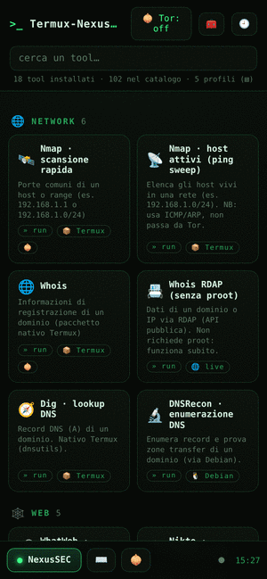
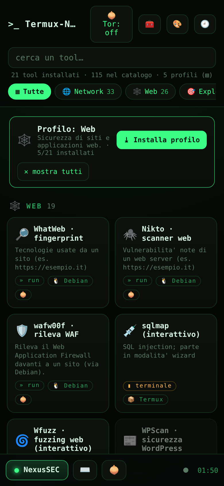
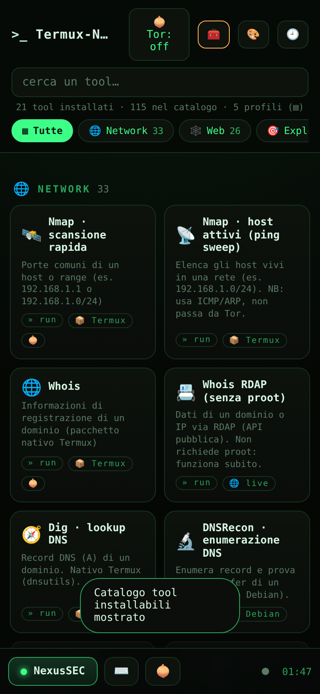
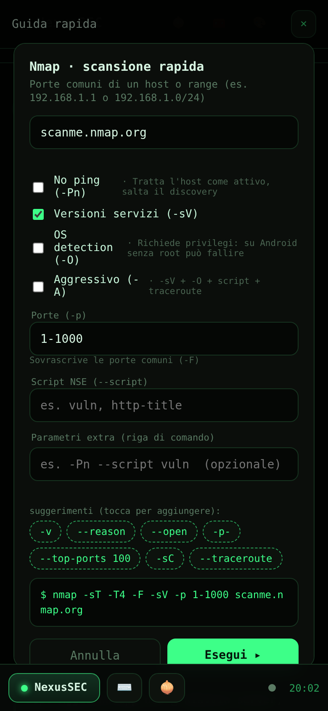
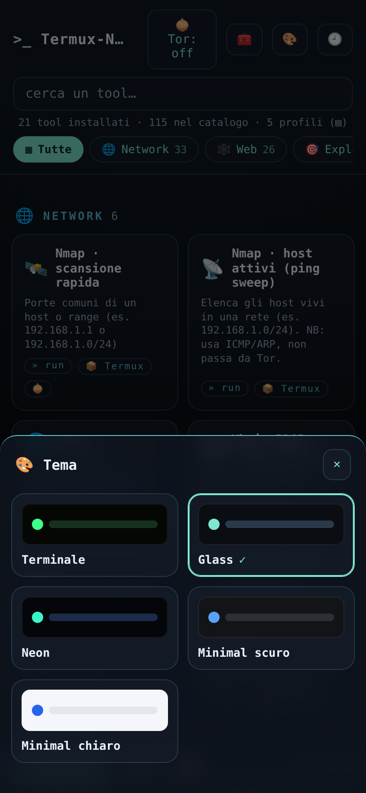
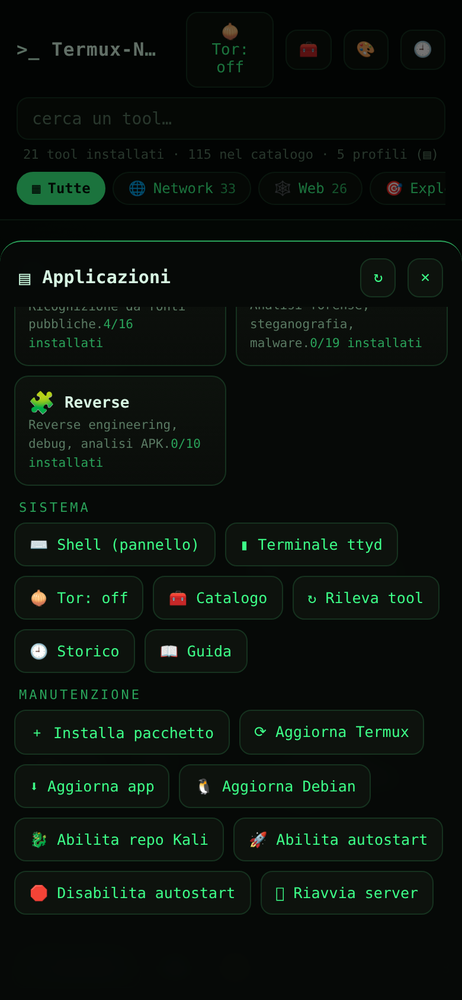
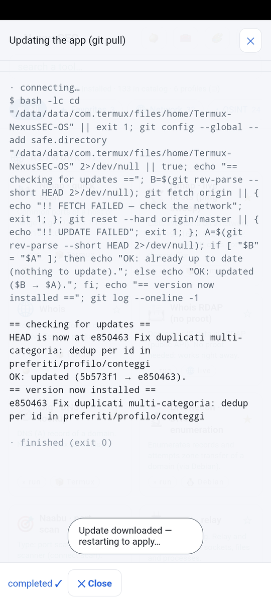
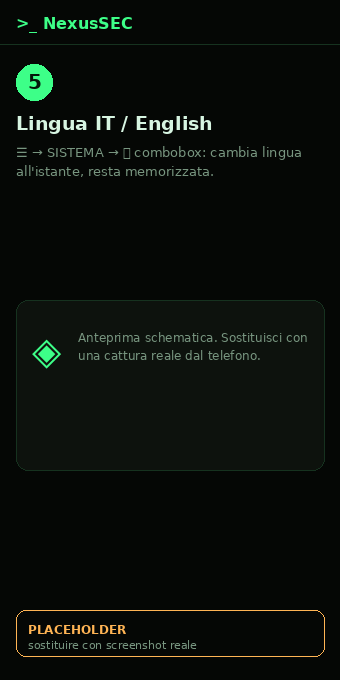
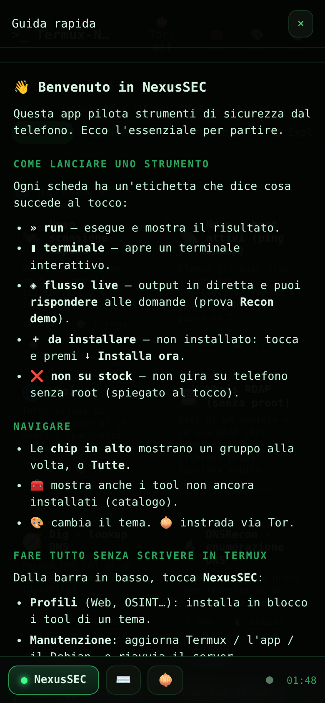
Tutto gira sul telefono, in locale. Nessun server esterno: la PWA parla solo con 127.0.0.1.
Everything runs on the phone, locally. No external server: the PWA talks only to 127.0.0.1.
Sempre l'ultima: Always latest: release GitHub.
Una riga sola. Apri Termux e incolla (tieni premuto per incollare):One line. Open Termux and paste (long-press to paste):
pkg install -y curl && curl -fsSL https://raw.githubusercontent.com/RedRider21/Termux-NexusSEC-OS/master/nexussec-setup.sh | bash
Poi apri Then open http://127.0.0.1:8000. Scarica ~700 MB–1 GB: meglio sotto Wi-Fi.Downloads ~700 MB–1 GB: prefer Wi-Fi.
Oppure, passo per passo:Or, step by step:
pkg update -y && pkg upgrade -y termux-setup-storage pkg install -y git python git clone https://github.com/RedRider21/Termux-NexusSEC-OS.git cd Termux-NexusSEC-OS bash install.sh python server.py
Avvio all'accensione con Termux:Boot (poi menu → Manutenzione → Abilita autostart). Utile anche Termux:API. Ricorda: stessa fonte di Termux.Start on boot with Termux:Boot (then menu → Maintenance → Enable autostart). Termux:API is handy too. Remember: same source as Termux.
1. Apri http://127.0.0.1:8000 (aggiungila alla Home per usarla a schermo intero).
2. Scegli un profilo e premi Installa, oppure installa i singoli tool dal catalogo 🧰.
3. Tocca una scheda: compila i parametri grafici e premi » run (output live).
4. Per automatizzare, apri i Wizard dal riquadro >_.
1. Open http://127.0.0.1:8000 (add it to Home for full screen).
2. Pick a profile and tap Install, or install single tools from the catalog 🧰.
3. Tap a card: fill the graphical parameters and hit » run (live output).
4. To automate, open the Wizards from the >_ box.
Il manuale completo, con tutti gli screenshot passo-passo (installazione, aggiornamenti, autostart, lingua), è su GitHub. The full manual, with all step-by-step screenshots (install, updates, autostart, language), is on GitHub.
📖 Apri il manuale completoOpen the full manualNexusSEC è per test autorizzati, apprendimento e ricerca. Nessuna garanzia: usalo a tuo rischio e nel rispetto delle leggi.
NexusSEC is for authorized testing, learning and research. No warranty: use at your own risk and within the law.